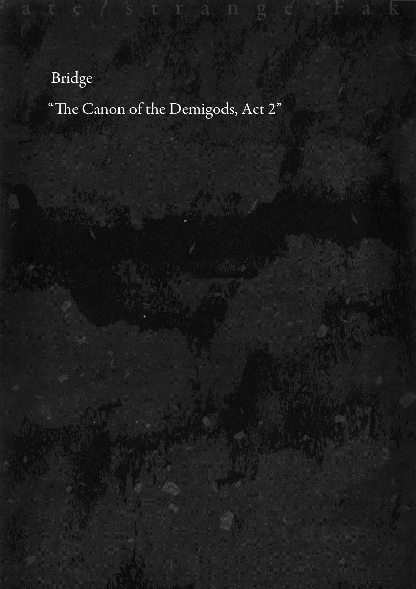
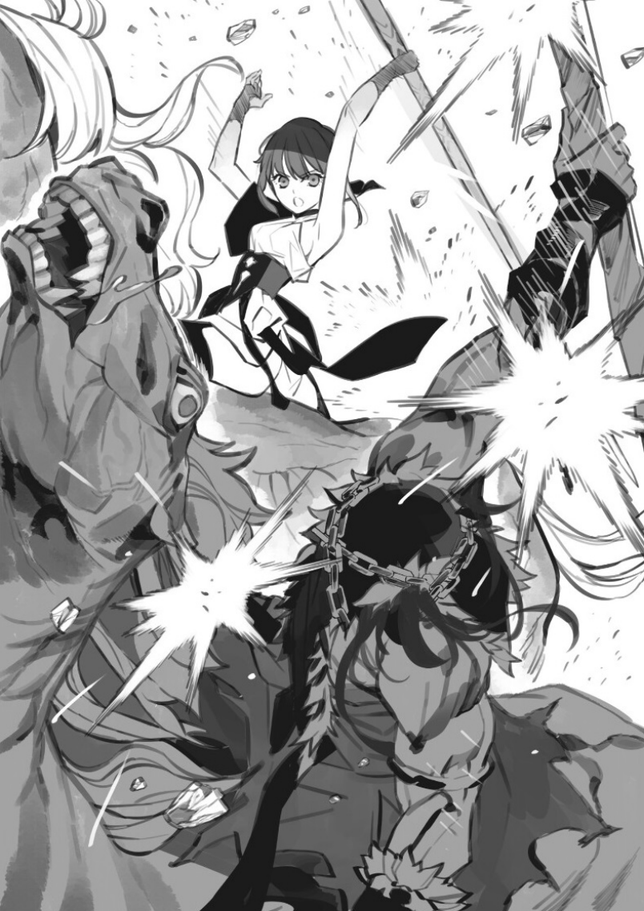

"O Cânone dos Semideuses, Ato 2"
Antiguidade, às margens do Mar Negro
Era uma bela terra. Um sol ofuscante iluminava seus campos e florestas, cercados pela vastidão de um mar profundo e azul.
A cidade-estado de Themiskyra.
Aquela terra, batizada em homenagem ao mar sagrado, ou talvez à própria deusa, debruçava-se sobre as férteis planícies da costa sul do Mar Negro. Ali erguia-se uma cidade construída sobretudo sobre o comércio marítimo.
Sobre essa cidade contavam-se muitas histórias. Havia quem dissesse que era uma ilha cercada de mar por todos os lados; outros afirmavam que era uma península; outros, ainda, que o poder dos deuses lhe permitia transitar livremente entre uma forma e outra. Mas o ponto mais importante não era a origem da cidade nem sua geografia, e sim o povo que a governava.
As amazonas. Essa tribo, também chamada de Amazones, distinguia-se por ser formada exclusivamente por mulheres. Exceto quando aquelas que desejavam filhos se uniam aos homens das cidades vizinhas, caça, agricultura, criação de animais e todos os demais aspectos da vida eram conduzidos inteiramente por mulheres.
Homens que se incomodavam com isso, reis de cidades vizinhas e bandos de salteadores que faziam de suas fortalezas nas montanhas, atacavam sua cidade com frequência, mas as amazonas repeliam todos os assaltos.
Não apenas a vida cotidiana, mas também os preparativos militares indispensáveis à defesa da cidade eram administrados inteiramente por mulheres. Sua habilidade em cavalgar e, sobretudo, em manejar o arco era tão impressionante que sua fama chegava até as culturas da distante Grécia.
Em Themiskyra havia uma rainha. Sua mãe era Otrere, devota sacerdotisa de Ártemis e grande mulher que se unira a Ares, outrora o deus da guerra, e, embora humana, dera à luz a filha desse deus.
A filha de Otrere, porém, superava-a em heroísmo.
Ela era sacerdotisa do deus da guerra e rainha de seu povo. Era também uma líder guerreira que cavalgava na vanguarda e erguia tempestades de sangue. A jovem rainha governava com firmeza as terras ao redor com sua força e sabedoria,
com a aura divina e o artefato divino que herdara do deus da guerra, e com o carisma de unir suas robustas guerreiras.
Dizia-se que, montada a cavalo, um golpe de sua lança abria o mar e uma flecha de seu arco fazia estremecer as florestas. Seu valor bastava para inspirar fé em suas seguidoras e temor reverente nas cidades vizinhas, e sua fama espalhou-se até a distante Grécia.
Mas... chegou um momento decisivo para aquela rainha e para todas as amazonas. Um vento do destino levou um navio solitário até Themiskyra. A bordo estava um homem que então era celebrado na Grécia e que gerações futuras também celebrariam como um grande herói.
Diz-se que a jovem rainha se encantou profundamente por ele. A razão de sua atração era simples, mas justamente por isso se tornava complicada. Não era senso de dever para gerar descendentes poderosos. Tampouco era desejo carnal. Era admiração. Quando a rainha, que até então não conhecera ninguém verdadeiramente forte além dos deuses, viu aquele homem... viu pela primeira vez um homem digno de rivalizar com sua origem, o deus da guerra.
Segundo as amazonas que sobreviveram, os olhos da rainha brilhavam então como os de uma criança que acabara de ouvir histórias dos deuses olímpicos.
A rainha não hesitou em conceder àquele grande herói, que dizia ter vindo por ordem de um rei para obter o cinturão do deus da guerra, permissão para permanecer e negociar.
Naturalmente, ela não permitira que as próprias emoções a dominassem nem decidira entregar o cinturão sem um plano.
Decidiu abrir mão do cinturão depois de permitir que quaisquer mulheres de sua tribo que desejassem filhos se unissem aos heróis a bordo do navio e de firmar um acordo comercial com a cidade-estado à qual o grande herói pertencia.
O fato de o rei não querer o cinturão para si, mas porque sua filha o pedira, também ajudou as negociações a avançarem sem atritos.
A rainha e seu povo acabaram aceitando aquilo como "prestar auxílio a uma mulher que vive numa terra distante".
No fim, chegaram à conclusão de que forjar uma aliança pacífica com aquele grande herói valia mais, para o povo amazona, do que o cinturão de guerra.
Nem a rainha nem seu povo jamais se esconderiam atrás de um exército de homens. Não recuariam nem mesmo diante da possibilidade de guerrear contra aquele grande herói, mas a rainha não era tão louca por batalha a ponto de iniciar uma guerra sem motivo.
Dado que o grande herói era homem, não podiam aceitá-lo como um dos seus, mas, ao estabelecer uma rivalidade amistosa entre ambos, a rainha esperava cultivar o espírito competitivo de suas mulheres e transformá-las num povo mais forte e mais unido.
Embora deixasse as emoções guiá-la quando disparava pelo campo de batalha, ela também tomava muitas decisões políticas desse tipo. Por isso, era conhecida por seu povo como uma mulher de duas faces, e ambas lhes inspiravam respeito.
Não se podia dizer se sua política em relação ao grande herói e a seus homens era realista para as condições sociais da época ou um sonho impossível.
Isso porque ela jamais deu frutos. A relação que a rainha imaginara entre seu povo e o grande herói desmoronou à mesa de negociações, justamente quando ela estava prestes a entregar o cinturão.
Porque as intrigas de uma deusa levaram... à morte trágica da rainha.
Rua Principal, Snowfield
Um cavalo imenso disparava sobre o asfalto destruído, tecendo seu caminho por entre a névoa negra como azeviche. No início eram quatro cavalos, mas um e depois outro foram sendo consumidos pela escuridão que avançava, até que apenas o galope de um ainda podia ser ouvido.
Mesmo com seus companheiros escondidos do mundo, o último cavalo gigantesco cortava a noite da cidade seguindo a vontade do grotesco Espírito Heroico em seu dorso, Alkeides, sem demonstrar o menor traço de medo.
Mas nem mesmo um Espírito Heroico tão grandioso quanto Alkeides tinha escolha senão fugir. A escuridão vinha. A escuridão vinha. Uma massa esmagadora de escuridão perseguia Alkeides de perto, trazida pelo ar que agitava as folhas das árvores à beira da rua, pela brisa que soprava entre os prédios e até pelos suspiros desesperados daqueles que ela já havia consumido.
Alkeides carregava dentro de si uma Energia Mágica distorcida, semelhante a lodo e da cor da destruição, mas a sombra que o perseguia encarnava um tipo diferente de treva.
Alkeides não tinha como saber exatamente o que era aquela "névoa negra". Ainda assim, toda a experiência que acumulara e os sentidos refinados no combate mortal em que acabara de se envolver lhe diziam que não se tratava de uma entidade comum.
Ele não tinha como saber o que acontecia aos que eram engolidos por aquela negrura de tinta, mas percebeu uma coisa: a Origem Espiritual de Cérbero, parte de seu Fantasma Nobre, havia desaparecido da área.
A Energia Mágica que os ligava não havia desaparecido por completo, mas ele não conseguia nem evocá-la nem dissipá-la.
Era como se uma enorme barreira estivesse rastejando por vontade própria na tentativa de isolá-lo. E, enquanto a torrente sombria, como um khamsin que ele vira em vida numa região árida da costa do Mediterrâneo tingido de preto, avançava atrás dele, os cascos de seu cavalo enfim superaram a "névoa negra".
Não havia mais obstáculos diante do cavalo. Sua fuga parecia simples.
Naquele instante... um leve som de algo cortando o ar alcançou os ouvidos de Alkeides. "...Aqui?" murmurou o arqueiro tornado vingador, com um matiz de emoção diferente em sua voz irritada.
"Vai me atacar nestas circunstâncias? Você é de fato destemida, rainha."
Ao mesmo tempo, encaixou uma flecha no arco e, ainda esporeando o cavalo, girou o tronco e a disparou.
Houve um estrondo, e faíscas brilharam na noite da Rua Principal. Um instante depois, cascos ressoaram pelos vãos entre os prédios, compondo com os do cavalo colossal de Alkeides um conjunto tumultuado.
Um único cavalo veloz surgiu, exibindo movimentos extraordinários. Em seu dorso ia montado um Espírito Heroico.
"...Alkeides!" A mulher montada, o Espírito Heroico da classe Rider Hippolyte, gritou no instante em que se avistaram. "Como ousa?! Pretende desonrar o que aqueles bravos heróis conquistaram usando uma maldição para conter o veneno?!"
Ao ouvir isso, Alkeides abriu um sorriso destemido por trás do pano que cobria o rosto, mesmo enquanto suprimia o veneno da Hidra que lhe corria nas veias com o poder do "lodo" que fluíra para dentro dele através de Bazdilot.
Entendo. Era isso, então. A imagem dos policiais que enfrentara pouco antes cruzou-lhe a mente. Aqueles humanos, deixando de lado o tal John... Podiam até empunhar Fantasmas Nobres, mas duvido que muitos conseguissem permanecer firmes diante da minha força.
A torrente de Energia Mágica dele deveria ter bastado para dispersar uma multidão de policiais.
No entanto, eles haviam permanecido no campo de batalha e sobrevivido. Tinham sido engolidos pela névoa negra, e ele não sabia o que lhes acontecera depois disso, mas demonstraram uma resistência antinatural... ou melhor, alguma força externa estava inegavelmente reforçando sua parca força.
"Rainha." As dúvidas de Alkeides chegaram instantaneamente a um ponto crítico enquanto ele esporeava o cavalo com toda a força e enunciava sua conclusão com frieza. "Foi você... quem lhes concedeu sua proteção, não foi?"
"..." Hippolyte acelerou o cavalo e disparou a próxima flecha em silêncio. Alkeides a desviou com o arco. A flecha desviada seguiu adiante e arrancou um grande pedaço do asfalto.
O colossal corcel do vingador, porém, pisoteou o obstáculo viscoso como se ele não existisse e seguiu em frente, sempre em frente, com toda a força.
Alkeides deslizou naturalmente para o contra-ataque sem interromper o movimento ceifador do arco. Encaixou três flechas de uma vez e as disparou em uníssono com a aceleração de seu cavalo.
As três flechas cortaram o ar, cada qual traçando uma trajetória distinta e se fechando sobre Hippolyte pela frente, por trás e por cima.
Hippolyte, porém, manobrou o cavalo com destreza e o fez correr pela lateral de um prédio. Correr daquele modo normalmente seria, é claro, impossível. Partindo da postura de um cervo-montês subindo a parede de uma barragem, o veloz corcel continuou praticamente a planar pela paisagem urbana com a força de um falcão.
Cavalo e cavaleira moviam-se como uma só criatura, e Hippolyte continuava a usar o arco sem ser abalada pelos movimentos da montaria. Somados à sua velocidade fulminante, seus movimentos poderiam ser confundidos com os de um centauro lendário.
A rainha das amazonas, por vezes chamada de "a tribo equestre original", retirava das profundezas de sua Origem Espiritual um ápice da arte de cavalgar cuja perfeição desmentia sua aparência juvenil, ou melhor, que havia sido alcançada por um caminho diverso da "perfeição" moderna, enquanto fendia a noite ao som do relinchar de sua montaria.
"Tenho certeza de que alguns daqueles oficiais eram homens", provocou Alkeides, balançado pelo próprio cavalo.
"..." "Foi o brilho do Graal e a lógica da guerra que o levaram a abandonar seu orgulho, rainha das amazonas?"

"...Cale-se." Nenhum dos dois afrouxou o ataque ou a defesa, mesmo enquanto trocavam palavras. "Não sei qual é o seu desejo... mas você realmente abandonaria seu modo de vida pelo Graal realizador de desejos?"
"Eu disse para se calar!" Hippolyte enfatizou, exasperada. Alkeides respondeu com palavras quietas, porém cortantes.
"Como fez quando nos traiu?" perguntou, sondando-a.
"..." A resposta da rainha... não foi um rugido de ira, mas silêncio. Toda expressão desapareceu dos olhos de Hippolyte, que até então ardiam de fúria. Sua montaria deixava para trás o cenário noturno com a velocidade do vento, mas, em sua mente, o tempo havia parado.
O rosto que ela expunha na noite escura estava sem expressão, ou talvez a expressão tivesse sido soterrada sob tantas outras emoções empilhadas como brasas.
Mas isso durou apenas um instante. Apenas o intervalo entre o cavalo tocar o chão e seus cascos voltarem a atingi-lo. Depois daquele breve branco em que o mundo pareceu congelar, a expressão estampada em seu rosto era... um sorriso destemido.
"Bobagem!" Ela colocou rapidamente o próprio cavalo lado a lado com o corcel colossal de Alkeides e brandiu uma longa lança materializada das profundezas de sua Origem Espiritual.
"!" "Estava tentando me testar? Então devia ter posto mais desprezo em suas palavras, Avenger."
A lança era mais comprida do que a altura da própria Hippolyte. Ela a brandiu contra Alkeides, pressionando-o numa tentativa de tomar-lhe a vida.
Num lampejo, seu Fantasma Nobre, o cinturão do deus da guerra, enrolou-se em seu braço que empunhava a lança, e uma estocada envolta em aura divina disparou contra o arco de Alkeides.
Alkeides contra-atacou ativando de imediato o mesmo Fantasma Nobre, o cinturão do deus da guerra, e aparando o golpe com o arco coberto de aura divina.
Uma haste do poderoso arco desviou a ponta da lança, e um estrondo ecoou pela noite da cidade. A divindade espalhada dilacerou as trevas ao redor e retardou a perseguição da "névoa negra".
Chocaram-se uma segunda vez, depois uma terceira, então seus cavalos se separaram, e Hippolyte rugiu: "Você não pode estar falando sério ao achar que eu cairia numa provocação dessas!" Suas vozes chegavam uma à outra com força estranha, apesar do ruído dos cascos e das flechas cruzando o ar.
Continuaram a lançar ataques uma contra o outro enquanto seus cavalos cruzavam trajetórias em três dimensões e a "névoa negra" se aproximava por trás com novo vigor.
"Você está desesperado, Alkeides!" "Oh...?"
Hippolyte disparava flechas contra as frestas da pele do Leão de Nemeia que o protegia, trocando às vezes para a lança e atacando diretamente a arma dele.
Era uma chuva incessante de golpes, perfeitamente sincronizada com os movimentos do cavalo em disparada. Ela tentava preencher com técnica a diferença na Energia Mágica contida em suas Origens Espirituais, mas Alkeides já estava desgastado por batalhas sucessivas e não se encontrava em condições de simplesmente despachá-la com força bruta.
Além disso... Enquanto aparava as estocadas da rainha, Alkeides percebeu. A força dela está aumentando. A quantidade e a qualidade da Energia Mágica dela eram nitidamente superiores às do encontro no barranco.
Foi reforçada temporariamente com um Selo de Comando...? Não. Isso não é um aumento momentâneo. A base de sua Origem Espiritual foi reforçada. "Retiro meu insulto, rainha."
"..." "Imaginei que sua estratégia fosse conceder sua bênção aos outros, enquanto você própria se mantinha escondida, e me atingir quando eu baixasse a guarda... mas sua intenção é atravessar-me de frente."
"Claro que é", rebateu a rainha, casualmente, de cima do cavalo, antes de bradar: "Alkeides... você está enganado."
"Oh?" "Não tenho a menor intenção de negar as crenças de minhas irmãs e de meu povo, sejam elas quais forem."
Concentrando poder no tecido enrolado ao redor de seu braço direito, o cinturão do deus da guerra, ela continuou em voz clara e ressonante: "Mas você jamais poderia saber por que meu povo nasceu...!"
Seu braço direito brilhou, e a aura divina que preenchia seu corpo se avolumou explosivamente. Ela concentrou a maior parte daquele fulgor na lança em sua mão direita e canalizou o restante para a montaria.
A rainha e seu estimado corcel haviam ultrapassado a unidade entre cavalo e cavaleira e se tornado um só também com a arma. Formaram uma única ponta de flecha, cravando em Alkeides um golpe feroz.
"Ou o que de fato desejei ao fim daquelas planícies luxuriantes e povoadas por espíritos!"
Por um instante, a "névoa negra" os ocultou por completo... então o maior estrondo de todos soou e a dispersou mais uma vez.
"...Bom golpe, rainha." Quando a névoa negra se dissipou, revelou Alkeides montado, com a lança cravada no braço esquerdo.
"Parece que você encontrou uma excelente Mestre."
"..." "Vejo que, nesse curto intervalo, ou se acostumou muito mais à batalha ou recebeu um ajuste muito preciso. Quem quer que seja, é impressionante por conseguir extrair tanto poder divino neste mundo tão distante da Era dos Deuses."
Seu ferimento, porém, passava longe de ser letal. Apesar de a ponta da lança continuar enterrada entre seus ossos, o "lodo" vermelho-escuro já se retorcia para preencher o ferimento.
"...Alkeides... o que você está carregando dentro de si?" perguntou Hippolyte, o rosto ficando sombrio, a mão direita ainda cerrada na lança. "O que é esse 'lodo'?"
Como a ponta da lança continuava fincada em Alkeides, ambos foram naturalmente obrigados a seguir cavalgando lado a lado. E, quando Hippolyte, vendo o "lodo" escorrer do ferimento do oponente, hesitou por um instante em recuar a lança, o arco empunhado pela mão direita de Alkeides cravou-se em seu flanco.
Com um grunhido, ela tratou de bloqueá-lo às pressas com a energia divina do cinturão, mas a força do golpe arrancou sua lança e tornou a separar os dois cavalos.
Alkeides verificou que o lodo estancara o ferimento assim que a lança foi removida e então declarou, casualmente:
"...Quem pode dizer? Mas, dado que ele se adapta à minha forma atual... provavelmente é parte de um 'humano'."
No instante seguinte... uma porção do lodo que transbordara de seu ferimento cresceu abruptamente, tornando-se uma onda vermelho-escura que se lançou contra Hippolyte.
"Nesse caso, rainha semideusa..."
"O quê...?!"
"Saiba que mero poder divino não pode perfurar o fim do homem."
O "lodo", da cor de sangue meio apodrecido e distinto da "névoa negra", saltou para engolir Hippolyte como uma massa viva de limo.
"Vai precisar de mais do que isso...!"
Hippolyte mais uma vez concentrou Energia Mágica no cinturão enrolado em seu braço, preparando-se para extrair dele ainda mais poder divino... mas, como se reagisse a isso, o lodo explodiu de repente.
"!"
Espalhou-se como uma teia de aranha centrada num cruzamento da Rua Principal, transformando-se numa nuvem de vapores lamacentos que ameaçava envolver Hippolyte e sua montaria por todos os lados.
Diante do que parecia uma floresta de árvores negras se fechando sobre ela em todas as direções, Hippolyte, consciente do perigo, começou a fundir a própria Origem Espiritual ao cinturão, quando...
"Com meu Selo de Comando, eu lhe ordeno:"
"...! Mestre?!" Uma voz soou dentro de Hippolyte, indo além da telepatia e falando diretamente à natureza de sua Origem Espiritual.
"Arranque o dragão das linhas ley e liberte-o com poder divino!"
No instante seguinte, Energia Mágica jorrou do entorno, do solo sagrado de Snowfield, e foi absorvida pela Deusa da Guerra de Hippolyte.
De súbito, um fulgor cor de arco-íris iluminou as trevas da noite.
Não era apenas seu Fantasma Nobre. A Energia Mágica contida no próprio Espírito Heroico inchou explosivamente, e, com ela no centro de uma torrente imensa de luz, a maior parte do "lodo" que avançava foi varrida.
Quando o clarão cegante se desfez e Hippolyte observou os arredores... o "lodo", a "névoa negra" e até o próprio Alkeides haviam desaparecido sem deixar vestígios.
Percebendo que ele aproveitara a chance para bater em retirada, Hippolyte rangeu os dentes. "Está querendo dizer que nem sequer valho a pena para você acertar as contas...?!"
Quando a raiva de Hippolyte arrefeceu, ela se dirigiu ao ar vazio. Comunicava-se telepaticamente com sua Mestre.
"Mestre, um de seus preciosos Selos de Comando..." começou a protestar, mas não conseguiu prosseguir.
"...Não. Obrigada, Mestre. E me perdoe. Parece que eu ainda não era forte o bastante."
O recuo que sofrera e a Energia Mágica distorcida do "lodo", que quase refluiu sobre ela no momento em que o dispersara com sua Origem Espiritual reforçada por Selo de Comando, já a haviam convencido:
Do jeito que as coisas estavam, eu não teria conseguido detê-lo. Ela foi capaz de deduzir que teria sido impossível se livrar completamente daquele "lodo", misturado ao sangue de Alkeides e a uma imensa quantidade de Energia Mágica, sem a ajuda de um Selo de Comando.
E... se aquele "lodo" lhe tivesse feito qualquer coisa, ela tinha certeza de que teria sido terrível. Hippolyte acreditava que sua Mestre, observando-a de longe, usara o precioso Selo de Comando para salvá-la porque levara aquilo mais a sério do que ela própria.
Mesmo que minha Mestre consumisse os três Selos de Comando, duvido que eu algum dia desejasse me rebelar... Hippolyte não nutria antipatia pelo ser que era sua Mestre. Havia pontos em que divergiam, mas era alguém digno de cavalgar a seu lado. Ainda assim... justamente por isso, sentia-se em dívida por ter precisado da ajuda de um Selo de Comando numa batalha contra um oponente tão ligado a si mesma.
"..." A paisagem urbana depois da partida de Alkeides e do recuo da névoa negra. Hippolyte afagou o pescoço do cavalo enquanto observava os arredores. Já deixara a Rua Principal para trás e colocara boa distância entre si e o hospital de onde a "névoa negra" irrompera.
À medida que o céu começava a clarear, ela sentia os moradores que haviam sido mantidos afastados começarem a se mover perto do hospital.
"Seja como for, não posso continuar lutando assim. Vamos recomeçar, Mestre", anunciou telepaticamente, e montou outra vez.
"Você correu bem, Kalion. Vamos descansar com a Mestre."
Chamando o cavalo pelo nome com uma expressão tranquila, Hippolyte desmaterializou-se e partiu lentamente de volta à fortaleza onde sua Mestre se encontrava, seguindo pelas ruas laterais mais desertas.
Várias pessoas viram a garota e o cavalo se afastando antes de se desmaterializarem, mas, como cassinos e outros estabelecimentos às vezes usavam cavalos em ações de divulgação, ninguém lhes deu muita atenção. Presumiram que as roupas de Hippolyte também deviam ser algum tipo de divulgação para um evento e seguiram caminho.
O povo de Snowfield já não podia se dar ao luxo de desperdiçar energia com pequenas esquisitices. Pessoas que deveriam ter deixado a cidade voltavam inexplicavelmente, dizendo que "não queriam ir embora".
Uma doença misteriosa alastrava-se entre os animais. Terroristas tinham atacado a delegacia. Houve ainda a explosão do gasoduto no deserto, os estragos na cidade causados por uma tempestade de vento anômala e o incêndio no distrito fabril.
Era um desastre atrás do outro, e todos que acompanhavam o noticiário ou a previsão do tempo suspeitavam da mesma coisa: que o gigantesco furacão que lançara a costa oeste dos Estados Unidos ao caos, formado sem qualquer aviso e supostamente vindo em linha reta para aquela região do país, rumaria diretamente para Snowfield.
Que tudo aquilo não podia ser coincidência. Que algo estava acontecendo em sua cidade. Não tinham prova de nada. Se escrevessem sobre isso na internet, as respostas vindas de outras regiões se enchiam de comentários como "Que azar dos diabos" e "Vocês devem estar amaldiçoados".
O fato de haver relativamente poucas mortes era parte do motivo, assim como os esforços de um órgão do governo para esconder quaisquer danos mais chamativos, mas, ainda assim, o mal-estar só crescia entre os moradores de Snowfield.
Mesmo assim... a situação ainda não havia se deteriorado ao ponto de provocar pânico e tumultos. Incontáveis sugestões hipnóticas e barreiras incorporadas à cidade desde sua concepção continham esses impulsos.
Ainda assim... estavam chegando ao limite.
Os rostos daqueles que percebiam o quão ruim sua situação se tornara começavam a exibir sinais não de resistência, mas de resignação.
Ninguém fazia ideia do que estava prestes a acontecer. A inquietação apenas girava nas profundezas de suas intuições. A sensação de que a cidade chamada Snowfield estava prestes a chegar ao fim. E de que suas vidas, assim como as de todos os demais, seriam arrastadas junto.
No Céu
Um enorme dirigível voava, por meio da magia, a uma altitude normalmente inalcançável. Dentro do zepelim, que também servia como ateliê de Francesca, maga que figurava entre as cabeças por trás da "Guerra do Santo Graal Falsa" de Snowfield, a maga de aparência jovial observava os acontecimentos no solo ao lado de Francois Prelati, o Caster que ela havia invocado.
Francesca vinha usando a Habilidade de Ilusão de Francois para ludibriar a distância espacial e observar a batalha diante do hospital como se ela estivesse acontecendo logo à sua frente, sem depender de familiares. No entanto...
"Que estranho..."
"O que foi?" perguntou Caster, enfiando torta de abóbora na boca.
"Tem muita coisa engraçada acontecendo", respondeu sua Mestre, Francesca, com ar confuso. "Quer dizer, eu fico feliz que estejam rolando coisas imprevisíveis, mas não saber as respostas deixa minha cabeça toda embaralhada, sabe?"
"Você é bem egoísta. Exatamente como eu esperaria de mim mesmo." Caster, Prelati, respondeu com uma gargalhada espalhafatosa. Francesca o ignorou e continuou pensando em voz alta.
"A Origem Espiritual da rainha amazona está de qualidade melhor do que estava quando eu a vi no barranco. A sorte dela está mais ou menos igual, mas as capacidades físicas e a Energia Mágica interna talvez tenham subido um rank inteiro."
"Uau. Isso pode acontecer? Nunca esperei ver um Servo crescer durante a Guerra."
"Pode, se ele receber um reforço vindo de uma injeção de Energia Mágica... Você acha que a Mestre da rainha, a pequena Doris, finalmente levou a magia de reforço para território proibido? Talvez apostando o próprio tempo de vida e até o próprio Brasão Mágico para reforçar à força os próprios Circuitos Mágicos...?"
"Nossa. A Mestre daquela rainha está do 'nosso lado', né? Ela sabe que o Graal é uma falsificação distorcida. Teria que ser maluca para ainda assim arriscar a vida por ele."
Prelati pareceu se interessar, pois limpou com um lenço o creme de abóbora ao redor da boca e se virou para Francesca.
"Bom, só vamos descobrir se ele consegue ou não se aproximar da Terceira Magia quando tudo acabar... mas, considerando a quantidade de Energia Mágica envolvida, deve ser capaz de realizar uns desejos de qualidade bem alta."
"Ah, tanto faz! É muito mais divertido quando eles se debatem de verdade em vez de cair fácil, de qualquer jeito! Quer dizer, estamos diante de uma reviravolta e tanto, com um favoritão como Gilgamesh sendo derrubado!" Francesca decidiu de repente aceitar a situação e caiu na gargalhada.
"Enfim", perguntou-lhe Prelati, "eu estou mais interessado naquela névoa negra que saiu do hospital. O que era aquilo?"
"Quem sabe?"
"'Quem sabe'?... Aquilo não é normal. Devíamos fazer alguma coisa?"
"O que você faria no meu lugar? Entraria em pânico e começaria a chorar porque está confuso e assustado?"
"... Bom, se eu não soubesse, acho que diria 'quem sabe?'. Mas ver uma versão de mim de gênero trocado chorando até se acabar poderia ser surpreendentemente excitante, então por que não tentar?"
"Concordo plenamente, mas daria trabalho, então só se eu estiver a fim. Agora mesmo eu não faço ideia do que vai acontecer, e quero aproveitar isso ao máximo!"
Dispensando Prelati, ela continuou a pensar em voz alta. "Ainda assim... a pequena Tsubaki acabar virando Mestre foi um acidente divertido, mas eu adoraria saber que tipo de Espírito Heroico ela invocou. Quer dizer, parece ter levado um monte de gente para sabe-se lá onde, não é?
"E aquela garota... Haruri, era esse o nome, né? Meus órgãos latejaram de alegria quando ela invocou um monstro, mas hoje ela não foi tão emocionante assim, foi?
"Quero dizer, não tem graça quando as pessoas fazem o que querem em lugares onde eu não consigo vê-las."
Nesse ponto, Francesca estreitou os olhos, e seu sorriso ganhou uma malícia quando murmurou:
"E aquele chupa-sangue entrando e saindo quando bem entende é só um pouquinho... desagradável, não acha?"
Num Sonho
"Parece que bastante gente foi puxada para 'este mundo'... Fico me perguntando o que vai acontecer agora." O hematófago com a forma de um menino, Jester Karture, o mago que tecnicamente era o Mestre de Assassin, usou seu poder para trocar de volta para a forma de garoto e contemplou a cidade do alto de um prédio.
"Se a srta. Assassin ficar do lado deste mundo, vai arrumar a polícia como inimiga. Não que eles já fossem amistosos para começo de conversa", murmurou Jester para si mesmo, rindo baixinho.
"Se ficar contra este mundo, vai ter de matar a pequena Tsubaki, que se esforçou tanto para proteger. Sim, seja qual for o rumo, isso não vai me ferir."
"Isto é uma Guerra do Santo Graal", continuou Jester com um sorriso perverso, destoando de sua aparência juvenil. "Todo mundo ao seu redor é inimigo. Todo mundo."
Logo, uma ponta de êxtase infiltrou-se em seu sorriso, e ele abriu os braços em deleite. Jester continuou a exprimir a própria alegria para o mundo, como se tentasse tomar para si o céu azul, no qual o sol já havia nascido por completo.
"Só eu... Só eu, seu Mestre, posso ser seu aliado... srta. Assassin."
E assim Jester embriagava-se no próprio êxtase... mas estava deixando passar algo, uma única "anormalidade" que ocorrera naquele mundo.
Nem mesmo Pale Rider, o Servo de Tsubaki, a notara. Debaixo da residência dos Kuruoka, outra coisa estava nascendo.
Sob a casa, haviam construído um ateliê de mago maior do que o próprio porão. Em torno de certo "catalisador" cuidadosamente preservado em seu centro, uma anormalidade estava se manifestando.
"..."
Talvez fosse mais correto chamá-la de aparição. No mínimo, não era o Servo de ninguém.
"...Por quê?"
Era um ser que talvez pudesse ter se tornado um, mas nenhuma Energia Mágica o ligava a alguém. Provavelmente se erguera em resposta a certa influência e logo desapareceria. "Aquilo" estava envolto numa veste vermelha, da qual gotículas de água trêmulas pairavam ao redor.
"Por que estou aqui..."
Tinha traços bem delineados e uma figura estranhamente andrógina... mas não fazia nada em particular. Apenas vacilava naquele ponto.
"...Zheng?"
Por ora.